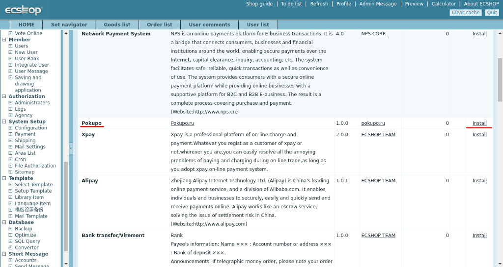
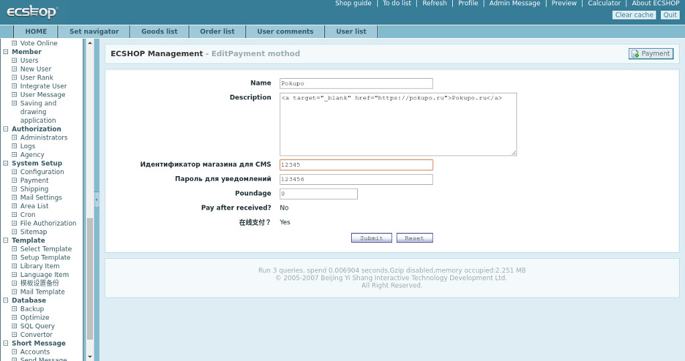
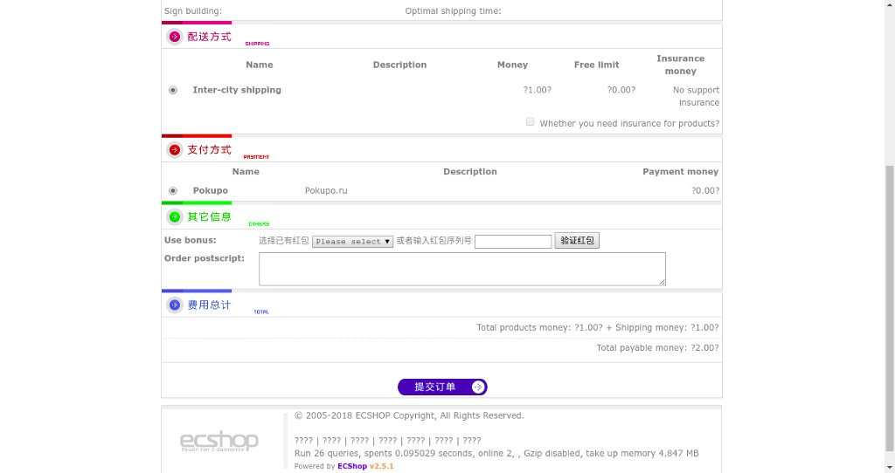

1. С помощью ftp или любым другим способом скопируйте файл /includes/modules/payment/pokupo.php и архива в аналогичный каталог CMS
2. Если вы сделали свежую установку ECSHOP, можете просто скопировать в крневой каталог CMS файл respond.php из архива, если же у вас уже настроенная система, вы можете просто добавить фрагмент отвечающий за работу модуля покупо из приложенного файла respond.php в уже существующий. Требуемый фрагмент выделен комментариями.
3. Перейдите в раздел System Setup / Payment. Найдите в списке доступных платежных модулей, модуль Pokupo и нажмите Install
4. Укажите в настройках "Идентификатор для CMS" вашего магазина в системе Покупо. Его можно посмотреть в панели управления продавца https://dashboard.pokupo.ru Также укажите пароль для уведомлений.

5. Далее необходимо задать Url для уведомлений в настройках магазина (личный кабинет->магазины->настройки->уведомления)
Пример: http://МОЙ_САЙТ/respond.php?code=pokupo

Здесь же нужно ввести пароль для уведомлений, который вы задали на предыдущем шаге при инсталяции модуля покупо в админке ECSHOP. Также сразу установите метод уведомления сайта. Рекомендуется выбрать режим POST.
6. На этом процесс настройки можно считать законченным. В дальнейшем при оформлении заказа, пользователю будет предложен метод оплаты Pokupo, выбрав который он будет переадресован на мерчант покупо для оплаты заказа.
